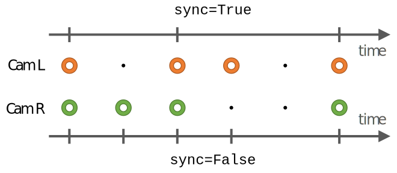

Sequence¶
All classes broadly associated with the dataset creation and manipulation
Interpolation: Summary
cubic(b, t[, a0, b0]) |
|
||
linear(b, t, *_) |
|
||
slerp(quat1, t, *_) |
|
Sequence: Summary
__init__(path[, stereosync, calibration]) |
|
||||
__getitem__(stamp) |
|
||||
cameras([shutter]) |
|
||||
duration |
The duration of the record in seconds as float, so basically: | ||||
end |
The end time of the record as Unix Timestamp in seconds with decimal places | ||||
exposure_limits |
|
||||
gamma(cam, input) |
|
||||
imu |
|
||||
mocap |
|
||||
raw |
The raw values in matrix form. | ||||
resolution |
Returns the resolution of the cameras as a named tuple Resolution (width, height) |
||||
rolling_shutter_speed |
How fast did the two rolling shutter cameras shuttered. | ||||
stereosync |
Enables/Disables frame synchronization between cameras. | ||||
start |
The start time of the record as Unix Timestamp in seconds with decimal places | ||||
times |
A list of all time stamps in this sequence. | ||||
vignette(cam) |
|
||||
-
class
ShutTUM.Interpolation[source]¶ Interpolation lets you calculate intermediate values between two boarders, based on a given formula.
ShutTUM’s data is recorded at different frequencies. Images are timestamped at around 20 Hz, Imu measurements at 160 Hz (exactly multiples per image), while Ground Truth data is clocked at 120 Hz. To get relateable measurements, you must sometimes interpolate between two values.
ShutTUM supports currently three interpolation methods, namely
linear,cubicandslerp. However it is possible to define your own function and hand it over to interpolating methods, such asGroundTruth.interpolateorImu.interpolate:def some_crazy_interpolation(a,b,t, a0, b0): return a + b - 17*t**2 # Then use it like so t = 1.5 # [s] Time stamp at which to interpolate x = sequence.imu[0].interpolate(sequence, t, accelaration_interpolation=some_crazy_interpolation) # Now x is interpolated between the imu values closest to 1.5s with the crazy function
-
static
cubic(b, t, a0=None, b0=None)[source]¶ Parameters: - a –
(float/ndarray) the lower bound from which to interpolate
- b –
(float/ndarray) the upper bound to which to interpolate
- t – (float) t: the value between 0 .. 1 of the interpolation
- a0 –
(float/ndarray) the value before a, from which the tangent in a is calculated. If None, a0 = a
- b0 –
float/ndarray) the value after b, from which the tangent in b is calculated. If None, b0 = b
Return type: float/ndarray
Interpolate cubically between two points. Note that a, b, a0 and a0 must all have the same shape.
\[x(t) = a + \frac{1}{2} t \cdot \left ( b - a_0 + t \cdot \left (2 a_0 - 5 a + 4 b - b_0 + t \cdot \left (3 \cdot \left (a - b \right ) + b_0 - a_0 \right ) \right ) \right ) \]- a –
-
static
linear(b, t, *_)[source]¶ Parameters: Return type: float/ndarray
Interpolate linearly between two points
 \[x(t) = \left (1 - t \right ) \cdot a + t \cdot b\]
\[x(t) = \left (1 - t \right ) \cdot a + t \cdot b\]Example:
# Find the average between two 3D vectors v1 = np.array([0,0,1]) v2 = np.array([5,0,0]) v = Interpolation.linear(v1, v2, .5) # np.array([2.5,0,0.5])
-
static
slerp(quat1, t, *_)[source]¶ Parameters: - quat0 –
(ndarray) the lower rotational bound from which to interpolate (4x1 vector). Will be normalized
- quat1 –
(ndarray) the upper rotational bound to which to interpolate (4x1 vector). Will be normalized
- t – (float) the value between 0 .. 1 of the interpolation
- _ – further args are ignored but required in the function definition (see
cubic)
Return type: Interpolate spherically between two quaternions. This method is mostly used to interpolate rotations. Directly copied from Transformation.py
- quat0 –
-
static
-
class
ShutTUM.sequence.Sequence(path, stereosync=True, calibration=False)[source]¶ The base class representing one dataset sequence.
In order for performent operations the sequence loads and checks lots of the data in its
__init__thus avoiding expensive checks in for loops or list comprehensions. In addition it holds the reference to list-like objects, such ascamerasorimu. You can iterate over each of these (depending on application) to get the correspondingValues in order.A typical application might look like:
# Load a dataset's sequence sequence = Sequence('path/to/folder/01') # Iterate over all imu values and find corresponding images for observation in sequence.imu: print(observation.acceleration) print(observation.angular_velocity) stereo = observation.stereo(shutter='global') if stereo is None: continue print(stereo.L.ID)
-
cameras(shutter='both')[source]¶ Parameters: shutter (str) – {both/global/rolling} the type of shutter you are interested in. Returns: The reference of the cameras, which you can iterate either as StereoCamera(global/rolling)orDuoStereoCamera(both)Raise: ValueError: for anything other then both/global/rolling Get a reference to one or both of the two stereo cameras, to iterate over their images
Note that often you want to directly iterate over those references, which you can do like:
# Iterate over both rolling and global images for g, r in sequence.cameras(shutter='both'): print(g.L.ID) print(r.R.stamp)
See also
ShutTUM.Sequence.stereosync
-
duration¶ The duration of the record in seconds as float, so basically:
sequence.end - sequence.start
-
end¶ The end time of the record as Unix Timestamp in seconds with decimal places
-
exposure_limits¶ Returns: a Namped Tuple Limits(min, max)indicating the minimumand maximum exposure time in milliseconds which occurred during this sequence
The minimal & maximal exposure used for all cameras. Note that these values are the limits not the extrema of the record, so most of the time, these will not be reached, but if, clamped accordingly.:
limits = sequence.exposure_limits print("Limits are %s .. %s ms" % (limits.min, limits.max))
-
gamma(cam, input)[source]¶ Parameters: - cam (str) – the name of the camera (e.g.
"cam1") - input (float) – the position to lookup, i.e. X-axis on luminance plot. Between 0 .. 255, will be rounded to int
Raises: ValueError: for unknown camera names or inputs below 0 or above 255
Lookup a gamma value from
params/<cam>/gamma.txt- cam (str) – the name of the camera (e.g.
-
imu¶ Returns: Generator property, yielding one Imuafter the otherThis property is a python generator, which you can use to iterate over all available
Imus in this sequence. Note that generators do not support indexing.Note that often you want to directly iterate over the Imu like so:
# Iterate over all imu values for observation in sequence.imu: print(observation.acceleration) # When you want e.g. the first imu value use: first_imu = next(sequence.imu) # When you absolutely need indexing convert the generator to a in memory list first imus = list(sequence.imu) print(imus[17].stamp) # Use the usual python "functional" shenanigans imus_up_to_10s = filter(lambda imu: imu.stamp <= 10, sequence.imu) imus_up_to_10s = [ imu for imu in sequence.imu if imu.stamp <= 10 ] acc_in_g = map(lambda imu: imu.acceleration * 9.805, sequence.imu) acc_in_g = [ imu.acceleration * 9.805 for imu in sequence.imu ] # Note that generators don't implement __len__() # to get the amount of imu values in this sequence either use N = len(list(sequence.imu)) # or: N = sum([ 1 for value in sequence.imu ]) # which is the same as: N = sequence.raw.imu.shape[0]
-
lookup_cam_name(shutter, side)[source]¶ Find the corresponding name of the camera for a given shutter and side
Parameters: - shutter – either one of {
"global","rolling"} - side – either one of {
'L','R'}
Returns: one of {
"cam1".."cam4"} or raises ValueError on invalid parameters- shutter – either one of {
-
mocap¶ Returns: Generator property, yielding one GroundTruthvalue after the otherThis property is a python generator, which you can use to iterate over all available
GroundTruths in this sequence. Note that generators do not support indexing.Note that often you want to directly iterate over the Mocap like so:
# Iterate over all ground truth values for gt in sequence.mocap: c1_T_w = gt >> 'cam1' # pose of cam1 in world frame # When you want e.g. the first ground truth value use: first_gt = next(sequence.mocap) # When you absolutely need indexing convert the generator to a in memory list first gts = list(sequence.mocap) print(gts[17].stamp) # Use the usual python "functional" shenanigans gts_from_10s = filter(lambda gt: gt.stamp >= 10, sequence.mocap) gts_from_10s = [ gt for gt in sequence.mocap if gt.stamp >= 10 ] # Note that generators don't implement __len__() # to get the amount of imu values in this sequence either use N = len(list(sequence.mocap)) # or: N = sum([ 1 for value in sequence.mocap ]) # which is the same as: N = sequence.raw.groundtruth.shape[0]
-
path¶ The path to this sequence. Environment variables get expanded automatically
-
raw¶ The raw values in matrix form. This property is a Named Tuple with the following fields:
-
resolution¶ Returns the resolution of the cameras as a named tuple
Resolution (width, height)
-
rolling_shutter_speed¶ How fast did the two rolling shutter cameras shuttered. Returns the time between the exposure of two consecutive rows in milli seconds (approximate)
-
shutter_types¶ Which shutter method uses each camera.
Returns one of the two following dictionaries:
# For sequences with odd ID { 'cam1': 'global' 'cam2': 'global' 'cam3': 'rolling' 'cam4': 'rolling' } # For sequences with even ID { 'cam1': 'rolling' 'cam2': 'rolling' 'cam3': 'global' 'cam4': 'global' }
-
start¶ The start time of the record as Unix Timestamp in seconds with decimal places
-
stereosync¶ Enables/Disables frame synchronization between cameras. (default
True)When working with stereo images you obviously need two images. Sometimes, however, one camera has recorded a frame while its
oppositehas dropped a frame. With thestereosyncoption you can specify how to handle these frame drops.With
stereosyncenabled, you iterate only over frames which have been captured by both cameras. With stereosync disabled, you iterate over all stereo images which have at least one camera captured an image. If both cams occurred to drop the same frame, this will be skipped in the iterations. The droppedImageis set to None:sequence.stereosync = False left_drops, right_drops = [], [] for stereo in sequence.cameras('global'): if stereo.L is None: left_drops.append(stereo.ID) if stereo.R is None: right_drops.append(stereo.ID) print('Left Camera dropped frames: %s' % left_drops) print('Right Camera dropped frames: %s' % right_drops)
-
times¶ A list of all time stamps in this sequence.
\[\mathbf{t} = \mathbf{t}_{frames} \cup \mathbf{t}_{imu} \cup \mathbf{t}_{groundtruth}\]Note that this list is sorted, so you can easily iterate over it like so:
for time in sequence.times: print(time)
-
vignette(cam)[source]¶ Parameters: cam (str) – the name of the camera to lookup its vignette (e.g. "cam1")Returns: the vignette image, read by cv2.imread() with dimensions [1280x1024] as grayscale Return type: ndarray
-
-
Sequence.__init__(path, stereosync=True, calibration=False)[source]¶ Parameters: - path (str) – the path to one sequence of the dataset, such as
~/ShutTUM/0001 - stereosync (bool) – possiblity to set the
stereosyncoption in constructor - calibration (bool) – is this a calibration sequence? If yes,
cam1andcam2are used asglobal
while
cam3andcam4are set under therollingnamespace :raises: ValueError: if anything goes wrong Load the sequence into memory (except images) and do basic data consistency checks.- It is checked that in path there exists a
data,framesandparamsfolder - It is checked that there exists the files
data/frames.csv,data/imu.csvanddata/ground_truth.csv - The files from 2. are loaded into memory (see
raw) - The
params/time.yamlis loaded - The
params/params.yamlis loaded
See also
- path (str) – the path to one sequence of the dataset, such as
-
Sequence.__getitem__(stamp)[source]¶ Parameters: stamp (float/slice) – either the time at which to look up the values or a slice object (e.g. start:stop) defining a range of time stamps, between which to lookup the values. If the start value of the slice is before start, or the end value of the slice is afterend, then the generator yield up tostartorend, respectively. Note that times for the slice are both inclusive unlike normal python index slices.Returns: - either a named tuple with the fields
stamp(float)global_(StereoImage)rolling(StereoImage)imu(Imu) andgroundtruth(GroundTruth).
or a generator yielding multiple (or none) of these. If any of the values of the above tuple does not exist for the stamp, it becomes
None. Note the spelling ofglobal_, sinceglobalis a reserved keyword in python.Looks up all corresponding
Values it can find for a given time stamp:sequence = Sequence(...) # The single lookup with one float as index for time in sequence.times: data = sequence[time] if data.global_ is not None: print(data.global_.ID) if data.rolling is not None: print(data.rolling.ID) if data.imu is not None: print(data.imu.acceleration) if data.groundtruth is not None: print(data.groundtruth.marker) # ... or the sliced version specifying all data between 5s .. 45s for data in sequence[5:45]: print(data) # ... or all up to 10s for data in sequence[:10]: print(data) # ... or all from 30s till end for data in sequence[30:]: print(data) # Custom steps, however, are not supported: try: x = sequence[::-1] except ValueError: print("Doesn't make sense...")
Note, though, that this is not the most performant thing to iterate over the sequence, since the lookup has to be done on every iteration. Consider iterating over
cameras,imuormocapinstead.